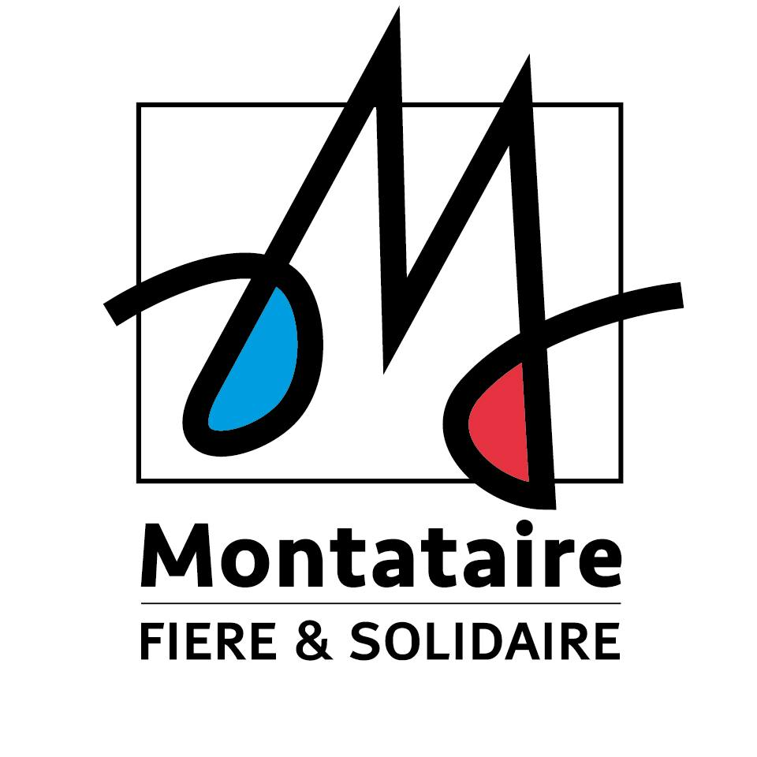

Supervision et support N2
Analyse quotidienne des alertes, résolution d'incidents réseau/système et suivi des tickets GLPI.
- Interventions au sein du SI de la commune.
- Support utilisateur.
Expérience professionnelle
Immersion de 10 semaines dans le service informatique d'une collectivité qui a permis de mêler la rigueur théorique à la réalité du terrain.
Le service informatique de Montataire est implanté dans un bâtiment administratif communal qui est la mairie annexe. Il fait partie du secteur public et a pour mission de garantir le bon fonctionnement des systèmes d'information de la collectivité. Ce service gère le parc informatique, assure la maintenance des équipements, le support aux utilisateurs, la sécurité des données, ainsi que le déploiement et la gestion des logiciels utilisés par les différents services municipaux (état civil, urbanisme, ressources humaines, etc.).

Des responsabilités réparties entre maintien en condition opérationnelle et amélioration continue.
Analyse quotidienne des alertes, résolution d'incidents réseau/système et suivi des tickets GLPI.
Déploiement de PC selon une procédure technique, en concordance avec les besoins immédiats.
Trace écrite de chaque missions ou projets réalisés, garantissant l'exécution cohérente des tâches.
Création d'une infrastructure de tests (laboratoire) identique à celle actuellement en production.
Architecture réseau
Virtualisation & services
Virtualisation & services
Réalisés en complément des tâches principales.
Installation & configuration
Une progression structurée permettant de valoriser le stage.
Cartographie de l'existant, accès aux outils et définition du plan d'action.
Semaine 1Industrialisation des tâches, résolution de problèmes et enfin rédaction des procédures.
Semaines 2 à 6Présentation au responsable infrastructure, remise des documentations et bilan final.
Semaine 6Je peux partager les rapports détaillés, les scripts créés et les retours du tuteur professionnel.